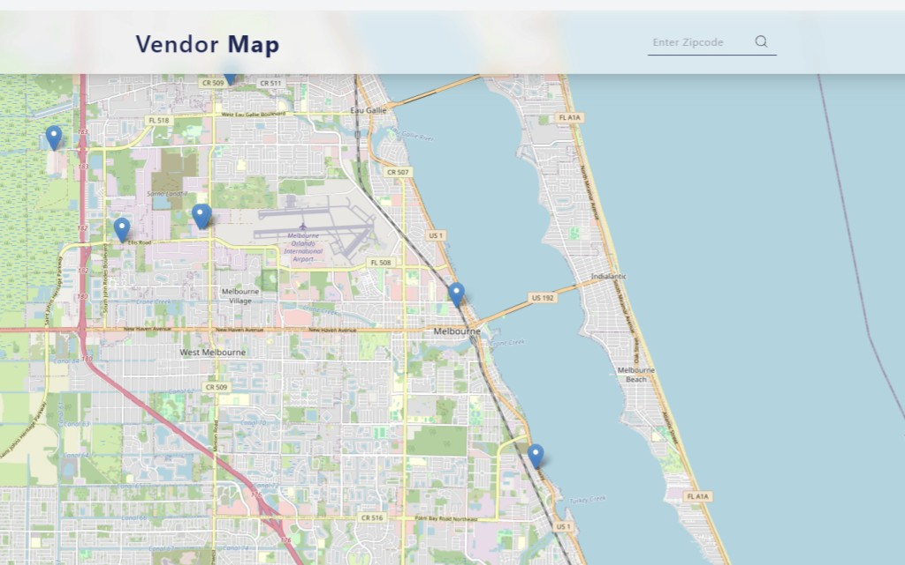

RG26 / Zoho Creator · Zoho CRM
RG26 / Zoho Creator · Zoho CRM
Vendor map
A Zoho Creator widget that places CRM vendors on an interactive map, with area search and vendor details in one interface.
Zoho Creator · Zoho CRM · Leaflet · JavaScript · Deluge
- Organization
- RG26 Technologies
- Focus
- Geographic vendor lookup
- Shown here
- Map interface
The problem
A list of vendor records provides limited geographic context. Administrators needed a way to locate vendors visually and retrieve their details without repeatedly searching individual CRM records.
The approach
I built a Zoho Creator widget using latitude and longitude data from Zoho CRM to position vendors on a Leaflet map. Search supports US ZIP codes and the first three characters of Canadian postal codes.
Implementation highlights
- A debounced map handler retrieves vendors within the visible bounds as users pan or zoom.
- Selecting a marker reveals the vendor name, number, email, phone, and status.
- Leaflet, the Zoho JavaScript SDK, CRM APIs, and Deluge connect the map to vendor records. HTML and CSS provide the interface.
The outcome
Administrators can explore an area and inspect nearby vendors without leaving the map.
Location search & vendor map
Select a screenshot to enlarge it.


Enlarge screenshotProject scope & source
The supplied case study describes the widget’s implementation and workflow. The screenshot shows the map interface; no measured time savings or delivery dates are reported.
Source: Case Study 2 Improved, supplied by Ian Van Anthony Gutierrez.
Planning a similar project?
Discuss a project